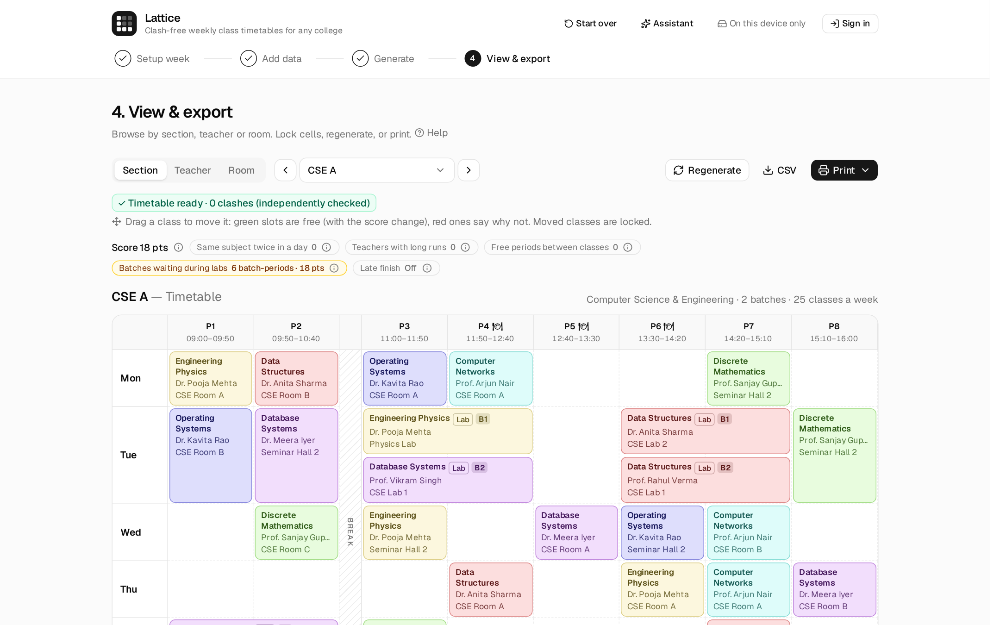
Today
Most colleges still make the timetable by hand in a spreadsheet. It takes days, and one change, like a teacher leaving, can cause clashes across a dozen sections.
With Lattice
Enter the week, rooms, teachers, sections and courses, then click Generate timetable. A solver finds the best timetable it can, and a separate checker confirms nothing is booked twice.
① Setup week
② Add data
③ Generate
④ View & export
Lattice · 2
Browser · Cloudflare Pages
FastAPI + OR-Tools CP-SAT. Finds the best timetable, or proves none exists and says why.
Claude answers questions and proposes changes as cards. Teacher names leave the browser as codes.
Sign-in, institutes and roles under row-level security, saved versions, public links.
/solve
/agent
auth, data
One JSON contract (SolveInput / SolveResult) for both engines · ~1,090 Vitest and 802 Pytest tests run in GitHub Actions before every deploy
Lattice · 3
Hard rules · never broken
Soft rules · points, lower is better
| Rule | Points |
|---|---|
| Same subject twice in a day (S1) | 10 per extra lecture |
| Teacher teaching over 3 in a row (S2) | 5 per period |
| Free periods between classes (S3) | 2 per period |
| A batch idle during another’s lab (S4) | 3 per period |
| Free periods before the day’s last class (S5, off by default) | 1 per period |
Each soft rule can be switched off under Aims.
Lattice · 4
Lattice · 5
Five minutes, no account
Testing files · testing-data folder
| File | What you should see |
|---|---|
| sample-college.xlsx | The sample college; imports cleanly |
| broken-import.xlsx | Nothing imported; 3 errors listed by row |
| cannot-be-built.xlsx | “Can’t be built”, with the cause and a fix |
Signed-in features: sign in with Google or an email link. The assistant needs a coupon; the codes are in the submission notes.
Lattice · 6
Step ① · Setup week
How it’s designed
Every section and teacher gets one of the marked periods free each day (H8). The solver picks which one, so lunch can move to fit the classes.
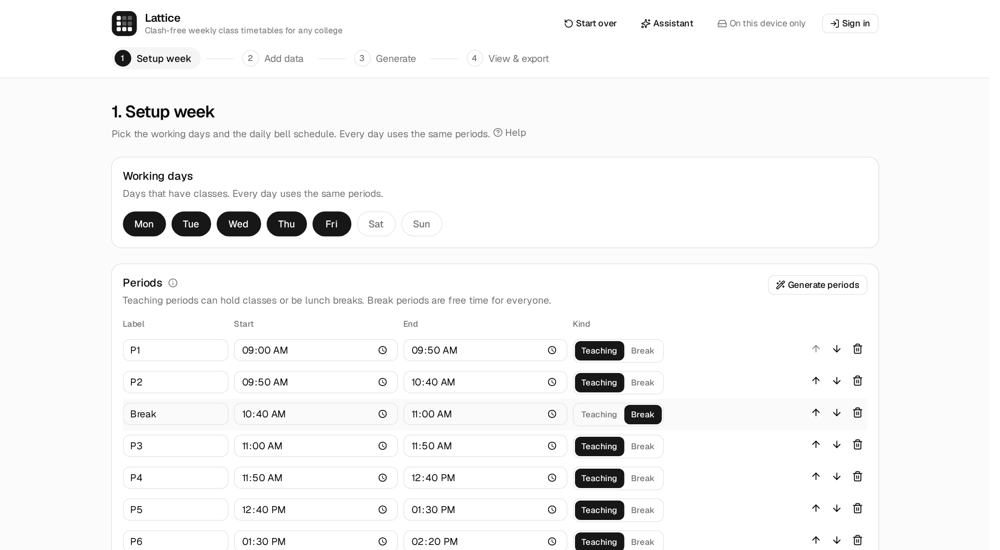
Lattice · 7
Step ② · Add data
How it’s designed
Checks run as you edit. A class with no eligible room blocks Next; a teacher or room booked past the week gets a warning.
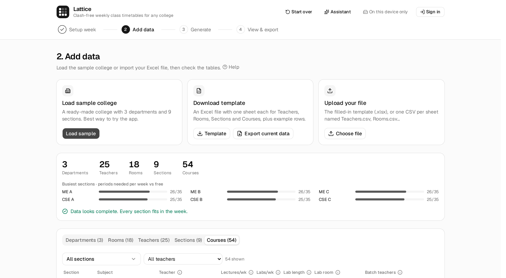
Lattice · 8
Step ② · Add data
How it’s designed
A file with any error imports nothing, so a half-loaded college never reaches the solver. A valid file asks before it replaces the data.
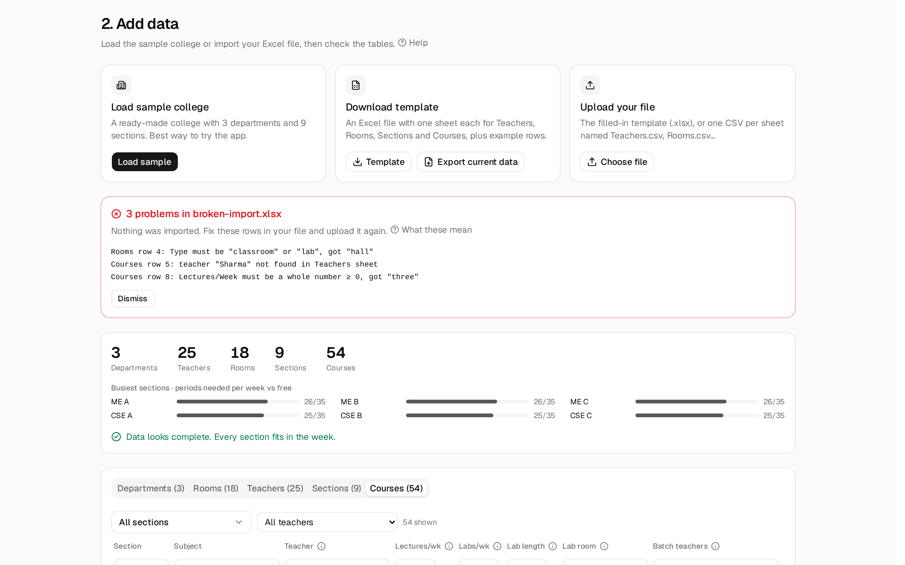
Lattice · 9
Step ③ · Generate
How it’s designed
CP-SAT finds the best timetable or proves none exists. The browser then re-checks the result with its own validator and scores it again.
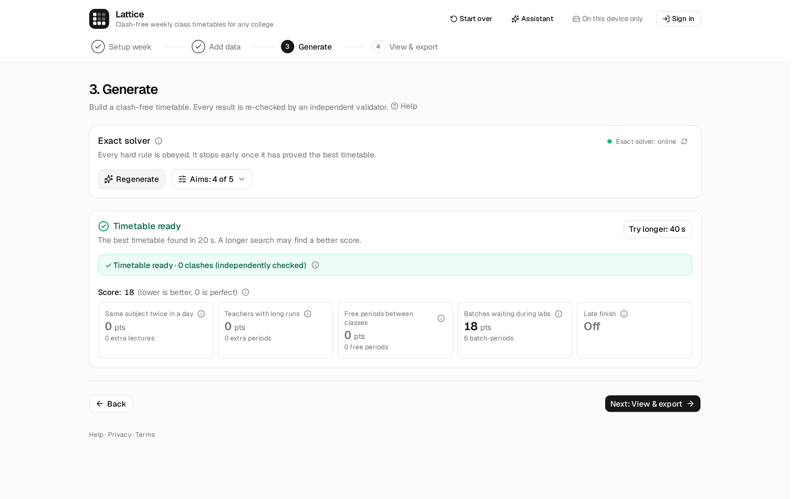
Lattice · 10
Step ③ · Generate
How it’s designed
The solver proves it impossible, and the app names the cause with numbers: 42 periods a week, only 35 free.
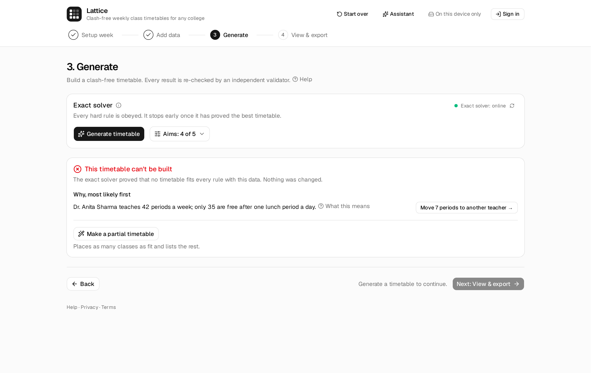
Lattice · 11
Step ③ · Generate
How it’s designed
Each switch is one soft rule written as an aim. Late finish starts off: on 2 CPU cores it makes the solver worse at the other four.
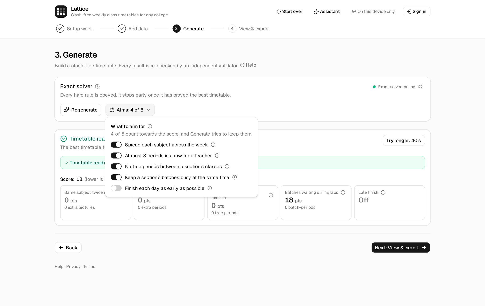
Lattice · 12
Step ④ · View & export
How it’s designed
Every slot is checked against the hard rules during the drag, and the validator checks the whole timetable again after the drop.
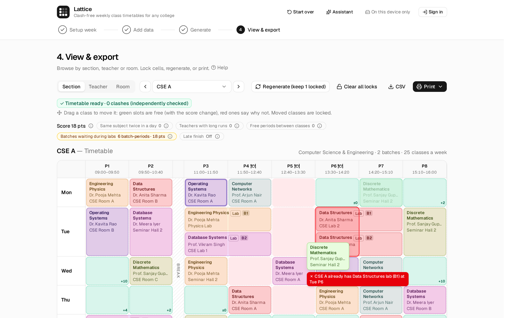
Lattice · 13
Step ④ · View & export
How it’s designed
Locks keep what’s agreed and re-solve the rest. If the locks make a timetable impossible, the solver says which ones.
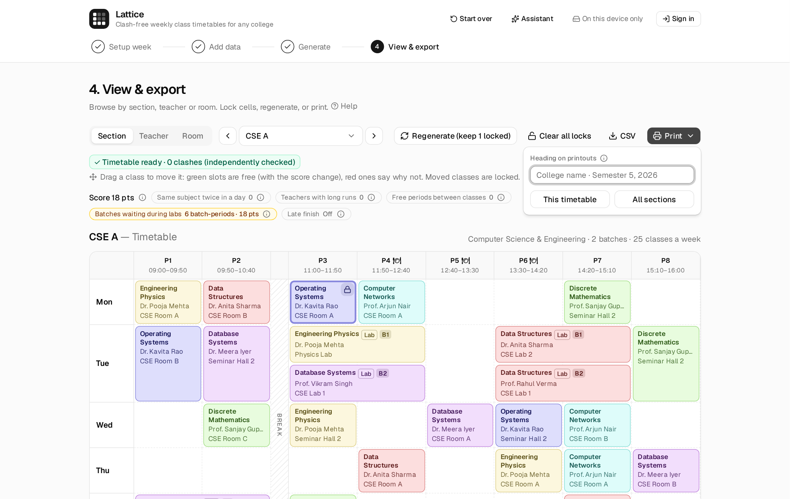
Lattice · 14
Signed in · status line in the header
How it’s designed
The database enforces the admin, editor and viewer roles. A save that would overwrite someone else’s asks first.
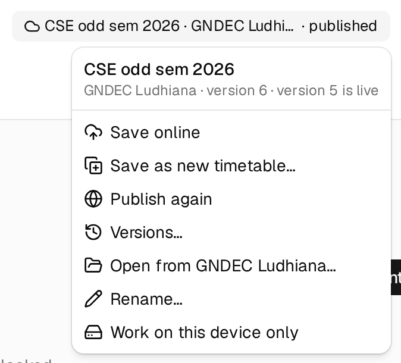
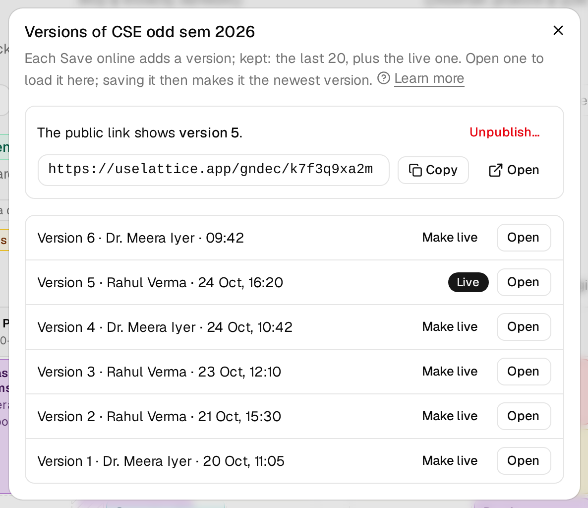
Lattice · 15
Signed in · Assistant button in the header
How it’s designed
Every card is dry-run in the browser against the hard rules before you see it. Teacher names leave the browser as codes.
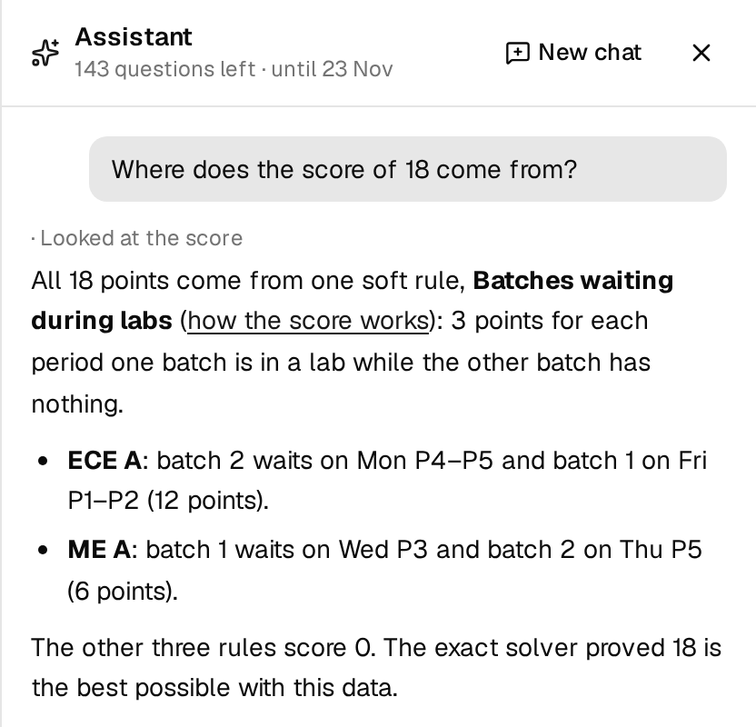
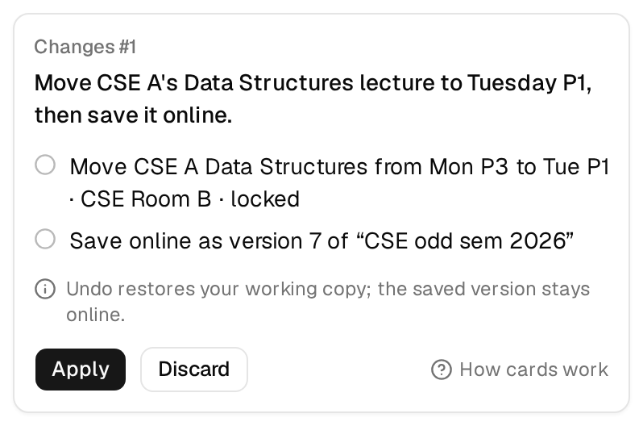
Lattice · 16
| What | Where |
|---|---|
| Live app | uselattice.app |
| Code | github.com/ankur-paul/schedule-optimizer |
| Testing data | The testing-data folder next to this deck, with a README |
| Tutorial | uselattice.app/help/start, five minutes on the sample |
| Every feature | FEATURES.md, with each feature’s known limits |
| Architecture | Slide 3; ARCHITECTURE.md and docs/deploy.md in the repo |
Ankur Paul